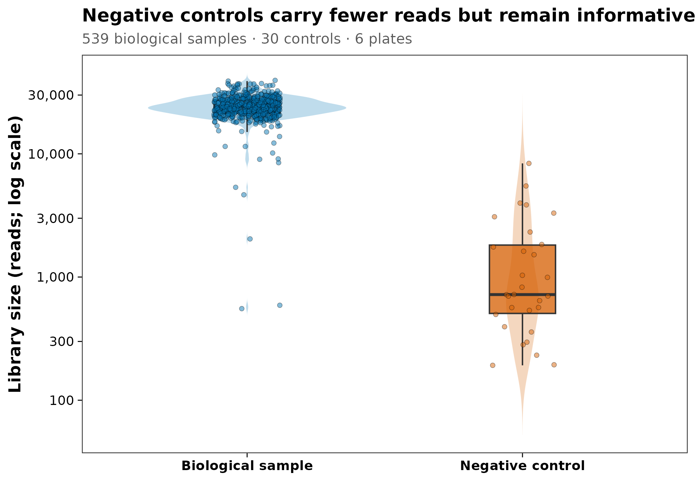
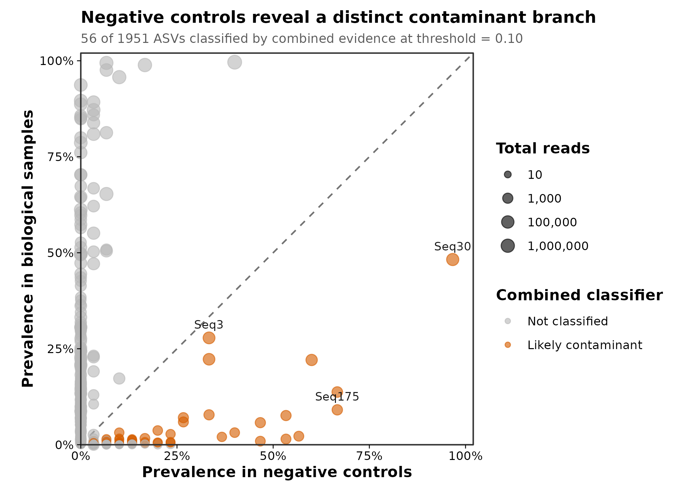
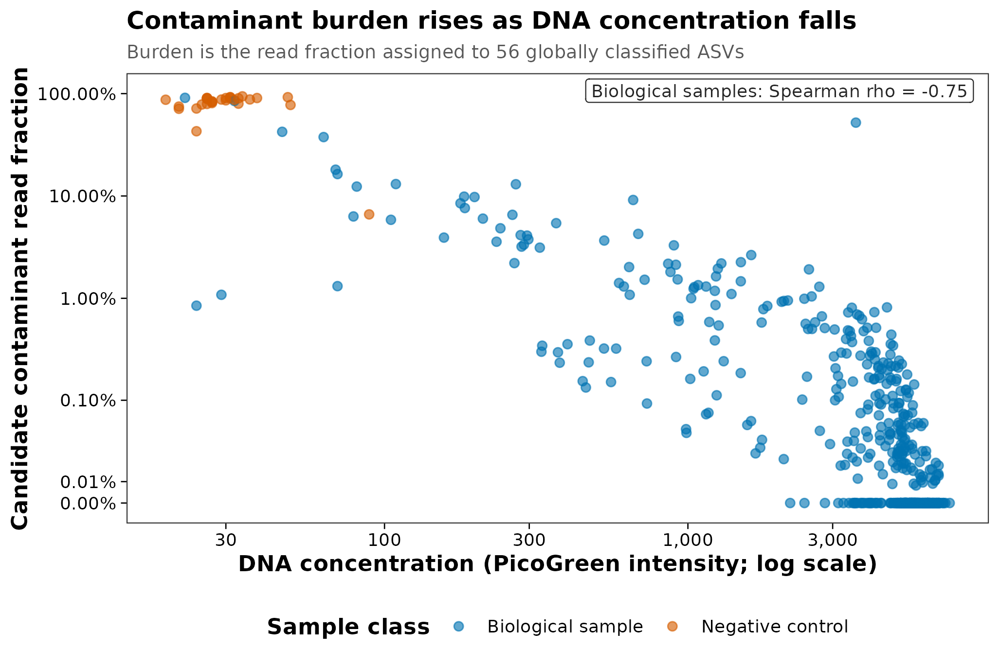

options(timeout = 600)
data_url <- "https://raw.githubusercontent.com/petemeng/microbiome-best-practices/3cb6a817e0c73ab7ecbec1cedc1ad80cbb9ecfaa/"
input_files <- c(
"data/small/decontam/metadata.tsv",
"data/small/decontam/otutab.tsv",
"data/small/decontam/source_summary.json",
"data/small/decontam/taxonomy.tsv"
)
for (path in input_files) {
dir.create(dirname(path), recursive = TRUE, showWarnings = FALSE)
if (!file.exists(path)) download.file(paste0(data_url, path), path, mode = "wb", quiet = TRUE)
}污染与对照：blank、kitome、低生物量、decontam
低生物量研究为什么必须先证明信号不是污染？
低生物量研究中，污染不是一句“设置了 blank”就结束。论文至少应给出三类可审查证据：
- 生物样本与阴性对照的 reads 分布；
- 候选污染物在阴性对照和生物样本中的 prevalence（检出率）；
- 每个生物样本中候选污染 reads 的比例，以及它与 DNA 浓度/生物量的关系。
本篇使用 decontam 官方示例 MUClite.rds。这是一个真实的 16S V4 数据对象，包含 1,951 个 DADA2 ASV、539 个口腔生物样本和分布在 6 块板上的 30 个阴性对照。从该对象导出三件套后，重新计算三类污染证据：
重要阴性对照必须测序，也必须暂时保留
阴性对照 reads 少是预期现象，不是“没测好”。如果在 ASV 推断后立刻按低 reads 删除所有 blank，就失去了 prevalence 方法最关键的参照。应先让对照经历与真实样本相同的采集、提取、PCR、建库、测序和序列处理，再做污染判定。
下载并读取本次分析的数据
需要 R，以及 decontam、ggplot2、scales。本次使用口腔样本与阴性对照的三张表；样本表保留 DNA 浓度、阴性对照标记和实验板信息。
在一个新建的文件夹中运行以下代码，下载文件后按文中的顺序继续分析：
library(decontam)
library(ggplot2)
stopifnot(
identical(
as.character(utils::packageVersion("decontam")),
"1.24.0"
)
)
set.seed(20260718)
pal_pub <- c(
"#0072B2", "#D55E00", "#009E73", "#CC79A7",
"#E69F00", "#56B4E9", "#F0E442", "#999999"
)
scale_color_pub <- function(...) {
ggplot2::scale_color_manual(values = pal_pub, ...)
}
scale_fill_pub <- function(...) {
ggplot2::scale_fill_manual(values = pal_pub, ...)
}
theme_pub <- function(base_size = 12) {
ggplot2::theme_bw(base_size = base_size, base_family = "sans") +
ggplot2::theme(
panel.grid = ggplot2::element_blank(),
axis.text = ggplot2::element_text(color = "black"),
axis.ticks = ggplot2::element_line(color = "black", linewidth = 0.3),
legend.key = ggplot2::element_blank(),
legend.background = ggplot2::element_rect(
fill = scales::alpha("white", 0.7),
color = NA
)
)
}
save_pub <- function(
plot,
file_base,
width = 120,
height = 95,
units = "mm",
dpi = 300
) {
dir.create(dirname(file_base), recursive = TRUE, showWarnings = FALSE)
ggplot2::ggsave(
paste0(file_base, ".pdf"),
plot,
width = width,
height = height,
units = units,
device = grDevices::cairo_pdf
)
ggplot2::ggsave(
paste0(file_base, ".png"),
plot,
width = width,
height = height,
units = units,
dpi = dpi,
bg = "white"
)
ggplot2::ggsave(
paste0(file_base, ".tiff"),
plot,
width = width,
height = height,
units = units,
dpi = dpi,
compression = "lzw",
bg = "white"
)
invisible(plot)
}从三件套读取并核对阴性对照
otutab <- read.delim(
"data/small/decontam/otutab.tsv",
row.names = 1,
check.names = FALSE
)
taxonomy <- read.delim(
"data/small/decontam/taxonomy.tsv",
row.names = 1,
check.names = FALSE
)
metadata <- read.delim(
"data/small/decontam/metadata.tsv",
row.names = 1,
check.names = FALSE
)
otutab <- as.matrix(otutab)
storage.mode(otutab) <- "numeric"
metadata$IsNegative <- as.logical(metadata$IsNegative)
stopifnot(
identical(rownames(otutab), rownames(taxonomy)),
identical(colnames(otutab), rownames(metadata)),
all(otutab >= 0),
all(otutab == floor(otutab)),
all(colSums(otutab) > 0),
all(c(
"IsNegative",
"quant_reading",
"PlateNumber",
"Sample_or_Control"
) %in% colnames(metadata)),
all(is.finite(metadata$quant_reading)),
all(metadata$quant_reading > 0)
)
dim(otutab)
otutab[1:5, 1:5]
taxonomy[1:5, , drop = FALSE]
head(metadata)
control_by_plate <- with(
metadata,
table(PlateNumber, IsNegative)
)
control_by_plate
stopifnot(all(control_by_plate[, "TRUE"] == 5))[1] 1951 569
P1101C01701R00 P1101C01702R00 P1101C01703R00 P1101C08701R00 P1101C08702R00
Seq1 3502 12040 9877 4035 12491
Seq2 8391 152 2401 5706 1444
Seq3 0 0 0 0 0
Seq4 193 7924 4333 257 4384
Seq5 2838 0 0 3161 294
Kingdom Phylum Class Order
Seq1 Bacteria Firmicutes Bacilli Lactobacillales
Seq2 Bacteria Proteobacteria Gammaproteobacteria Pasteurellales
Seq3 Bacteria unknown unknown unknown
Seq4 Bacteria Proteobacteria Gammaproteobacteria Pasteurellales
Seq5 Bacteria Proteobacteria Betaproteobacteria Neisseriales
Family Genus
Seq1 Streptococcaceae Streptococcus
Seq2 Pasteurellaceae Haemophilus
Seq3 unknown unknown
Seq4 Pasteurellaceae Haemophilus
Seq5 Neisseriaceae Neisseria
X.SampleID PlateNumber Subject Habitat quant_reading
P1101C01701R00 P1101C01701R00 3 1101 Tongue 2829
P1101C01702R00 P1101C01702R00 3 1101 Cheek_Right 5808
P1101C01703R00 P1101C01703R00 3 1101 Cheek_Left 5052
P1101C08701R00 P1101C08701R00 3 1101 Tongue 1227
P1101C08702R00 P1101C08702R00 3 1101 Cheek_Right 3872
P1101C08703R00 P1101C08703R00 3 1101 Cheek_Left 5872
Sample_or_Control IsNegative
P1101C01701R00 True Sample FALSE
P1101C01702R00 True Sample FALSE
P1101C01703R00 True Sample FALSE
P1101C08701R00 True Sample FALSE
P1101C08702R00 True Sample FALSE
P1101C08703R00 True Sample FALSE
IsNegative
PlateNumber FALSE TRUE
1 91 5
2 90 5
3 89 5
4 90 5
5 89 5
6 90 5共有 1,951 个 ASV、569 个测序样本，其中 30 个为阴性对照；每块板均有 5 个对照。这里的独立生物单位不是 539：口腔样本来自重复受试者/部位，污染识别使用样本级浓度和对照，但后续生物学推断仍必须按原研究的重复测量结构建模。
下载完整 R 脚本。脚本包含数据下载、计算和图形导出。
首次使用时安装 R 包
install.packages(c(
"BiocManager", "ggplot2", "scales", "digest"
))
BiocManager::install(version = "3.19", ask = FALSE)
BiocManager::install(
c("decontam", "phyloseq"),
ask = FALSE,
update = FALSE
)污染为什么在低生物量样本中被放大
观测到的 DNA 由样本信号与外源信号共同组成
可以把某个样本的观测 DNA 简化为：
\[ \text{Observed DNA} = \text{Biological DNA} + \text{Reagent/laboratory DNA} + \text{Cross-sample DNA} \]
试剂或实验室带入的污染 DNA 质量可能不大，却常具有近似固定的绝对量。当真实样本的微生物 DNA 很少时，相同污染量会占据更高的相对比例。因此：
- 阴性对照可能获得可观的微生物 reads；
- 低 DNA 浓度样本更容易被 reagent/kit background 主导；
- 相同 kit lot 在高生物量粪便中几乎不可见，在胎盘、血液、肺、皮肤拭子或洁净环境样本中却可能决定结果。
Salter 等系统展示了试剂与实验室污染对低生物量微生物组的影响；Eisenhofer 等进一步总结了从实验设计到报告的控制原则。
blank 不是一种，而是一条污染定位链
| 对照 | 从哪一步开始 | 主要帮助定位 |
|---|---|---|
| Field blank | 采样现场 | 采样器具、空气、运输和保存 |
| Collection blank | 采样操作 | 拭子、缓冲液和采样步骤 |
| Extraction blank | DNA 提取 | kit/reagent、工作台和提取批次 |
| PCR no-template control | PCR | PCR 试剂和扩增环境 |
| Mock community / positive control | 已知组成 | 提取偏倚、扩增偏倚、串样与流程失败 |
阴性对照回答“没有加入生物样本时出现了什么”，阳性对照回答“已知输入经过流程后变成什么”。两者不能互相替代。若研究跨多个 kit lot、提取板或测序批次，每个关键批次都要有相应对照；把所有 blank 集中在最后一块板上，无法识别批次特异污染。
kitome 不是可直接套用的黑名单
“kitome”泛指试剂盒和实验室背景中反复出现的微生物 DNA，但它不是固定的物种名单。同一个属：
- 在某个项目中可能是试剂污染；
- 在另一种真实生态位中可能是优势成员；
- 还可能同时包含真实信号和污染信号。
按属名删除 Ralstonia、Pseudomonas 或 Sphingomonas 等“常见污染菌”会制造不可追踪的主观偏差。判定应结合本实验的阴性对照、浓度、批次、序列分辨率和丰度模式，而不是仅看 taxonomy。
decontam 的两个基本证据
Frequency method（频率法）
若污染 DNA 的绝对量近似固定，其相对丰度会随样本总 DNA 浓度升高而下降。该方法需要每个样本在等摩尔混样前的定量值，且浓度必须为正数。
Prevalence method（检出率法）
若一个 ASV 在阴性对照中比在真实样本中更常检出，它更符合污染物模式。该方法需要经过完整流程并测序的阴性对照。
Combined method（联合方法）
decontam 可用 Fisher 方法合并 frequency 与 prevalence 证据。本例以 method = "combined"、threshold = 0.10 为主分析，同时报告 frequency、prevalence 和按板分层的敏感性结果。
注记threshold 不是通用 FDR 阈值
decontam 的 threshold 是分类器用于拒绝“非污染物”假设的内部概率阈值。0.10 是软件默认值，不等于 10% FDR，也不是所有研究的最优阈值。应结合控制设计、诊断图和敏感性分析预先确定并完整报告。
深入：哪些污染 decontam 不一定能抓到
decontam 识别的是符合浓度或阴性对照模式的 feature。以下问题可能需要额外证据：
- 高丰度样本向相邻孔、索引或低生物量样本的 cross-talk；
- 所有阴性对照都在不同批次导致的不可识别批次混杂；
- 污染物同时也是目标生态位真实成员；
- 只有一个阴性对照，prevalence 几乎无法稳定估计；
- 某些污染只发生在采样前，而现有对照从提取步骤才开始；
- 样本已经被污染 reads 主导，仅删除若干 ASV 后仍不可解释。
因此还应检查板位、索引组合、批次、阴性/阳性对照、实验日志和样本总负荷。污染控制是证据整合，不是单一函数调用。
利用阴性对照与DNA浓度识别候选污染
先看测序深度，不删除低 reads 对照
sample_qc <- data.frame(
SampleID = rownames(metadata),
SampleClass = factor(
ifelse(
metadata$IsNegative,
"Negative control",
"Biological sample"
),
levels = c("Biological sample", "Negative control")
),
Plate = factor(metadata$PlateNumber),
DNAConcentration = metadata$quant_reading,
LibrarySize = colSums(otutab),
stringsAsFactors = FALSE
)
library_summary <- do.call(
rbind,
lapply(
split(sample_qc$LibrarySize, sample_qc$SampleClass),
function(x) {
data.frame(
N = length(x),
Minimum = min(x),
Median = stats::median(x),
Maximum = max(x)
)
}
)
)
library_summary N Minimum Median Maximum
Biological sample 539 554 23956.0 39483
Negative control 30 192 720.5 8365生物样本的 median library size 为 23,956 reads；阴性对照为 720.5 reads。对照 reads 较少，但并非全部为 0，这正是后续 prevalence 证据的来源。
分别运行 frequency、prevalence 与 combined
decontam 的矩阵输入是“样本 × feature”，因此需要转置标准三件套中的 otutab。
seqtab <- t(otutab)
is_negative <- metadata[rownames(seqtab), "IsNegative"]
dna_concentration <- metadata[
rownames(seqtab),
"quant_reading"
]
stopifnot(
identical(rownames(seqtab), rownames(metadata)),
identical(colnames(seqtab), rownames(taxonomy))
)
contam_frequency <- decontam::isContaminant(
seqtab,
method = "frequency",
conc = dna_concentration,
threshold = 0.10
)
contam_prevalence <- decontam::isContaminant(
seqtab,
method = "prevalence",
neg = is_negative,
threshold = 0.10
)
contam_combined <- decontam::isContaminant(
seqtab,
method = "combined",
conc = dna_concentration,
neg = is_negative,
threshold = 0.10
)
classification_summary <- data.frame(
Method = c("Frequency", "Prevalence", "Combined"),
Threshold = 0.10,
ContaminantASVs = c(
sum(contam_frequency$contaminant),
sum(contam_prevalence$contaminant),
sum(contam_combined$contaminant)
)
)
classification_summary
method_overlap <- table(
Frequency = contam_frequency$contaminant,
Prevalence = contam_prevalence$contaminant
)
method_overlap Method Threshold ContaminantASVs
1 Frequency 0.1 58
2 Prevalence 0.1 124
3 Combined 0.1 56
Prevalence
Frequency FALSE TRUE
FALSE 1812 81
TRUE 15 43在默认 threshold = 0.10 下，frequency 法标记 58 个 ASV，prevalence 法标记 124 个，combined 法标记 56 个。两种基本证据不会完全重合：某些高 prevalence 污染物在真实样本和对照中都很常见，单独用 prevalence 可能漏掉；某些低丰度 feature 又主要依赖对照证据。
按实验板做敏感性分析
本数据每块板都有 5 个阴性对照，可以检查板特异判定：
contam_batch <- decontam::isContaminant(
seqtab,
method = "combined",
conc = dna_concentration,
neg = is_negative,
batch = factor(metadata[rownames(seqtab), "PlateNumber"]),
batch.combine = "minimum",
threshold = 0.10
)
batch_comparison <- data.frame(
GlobalCombined = contam_combined$contaminant,
BatchCombined = contam_batch$contaminant
)
table(batch_comparison)
data.frame(
Global = sum(batch_comparison$GlobalCombined),
BatchAware = sum(batch_comparison$BatchCombined),
Shared = sum(
batch_comparison$GlobalCombined &
batch_comparison$BatchCombined
)
) BatchCombined
GlobalCombined FALSE TRUE
FALSE 1889 6
TRUE 15 41
Global BatchAware Shared
1 56 47 41全局 combined 标记 56 个 ASV；按板分析标记 47 个，两者共有 41 个。这里把全局 combined 作为可复现主分析，把按板结果作为敏感性检查；真实研究应根据 kit lot、提取板和对照布局在分析方案中预先确定主模型。
生成 feature 级和样本级审计表
negative_prevalence <- colMeans(
seqtab[is_negative, , drop = FALSE] > 0
)
biological_prevalence <- colMeans(
seqtab[!is_negative, , drop = FALSE] > 0
)
total_feature_reads <- colSums(seqtab)
contaminant_audit <- data.frame(
FeatureID = rownames(contam_combined),
taxonomy[rownames(contam_combined), , drop = FALSE],
NegativePrevalence = negative_prevalence,
BiologicalPrevalence = biological_prevalence,
TotalReads = total_feature_reads,
FrequencyP = contam_combined$p.freq,
PrevalenceP = contam_combined$p.prev,
CombinedP = contam_combined$p,
GlobalContaminant = contam_combined$contaminant,
BatchContaminant = contam_batch$contaminant,
check.names = FALSE
)
contaminant_ids <- contaminant_audit$FeatureID[
contaminant_audit$GlobalContaminant
]
library_size <- colSums(otutab)
contaminant_reads <- colSums(
otutab[contaminant_ids, , drop = FALSE]
)
sample_burden <- data.frame(
SampleID = colnames(otutab),
SampleClass = sample_qc$SampleClass,
Plate = sample_qc$Plate,
DNAConcentration = sample_qc$DNAConcentration,
LibrarySize = library_size,
ContaminantReads = contaminant_reads,
ContaminantFraction = contaminant_reads / library_size,
stringsAsFactors = FALSE
)
burden_summary <- do.call(
rbind,
lapply(
split(
sample_burden$ContaminantFraction,
sample_burden$SampleClass
),
function(x) {
data.frame(
Minimum = min(x),
Median = stats::median(x),
Mean = mean(x),
Maximum = max(x)
)
}
)
)
burden_summary
burden_correlation <- stats::cor.test(
sample_burden$ContaminantFraction[
sample_burden$SampleClass == "Biological sample"
],
sample_burden$DNAConcentration[
sample_burden$SampleClass == "Biological sample"
],
method = "spearman",
exact = FALSE
)
burden_correlation Minimum Median Mean Maximum
Biological sample 0.00000000 0.0001888752 0.01093441 0.9096968
Negative control 0.06610879 0.8696184865 0.81311348 0.9406807
Spearman's rank correlation rho
data: sample_burden$ContaminantFraction[sample_burden$SampleClass == "Biological sample"] and sample_burden$DNAConcentration[sample_burden$SampleClass == "Biological sample"]
S = 45698282, p-value < 2.2e-16
alternative hypothesis: true rho is not equal to 0
sample estimates:
rho
-0.7510007 combined 候选污染 ASV 在阴性对照中占 reads 的 median 为 87.0%，在生物样本中为 0.019%。生物样本内，污染 reads 比例与 DNA 浓度呈负相关（Spearman \(\rho=-0.751\)，\(P<2.2\times10^{-16}\)）。这是低生物量样本更容易受固定背景 DNA 影响的真实数据表现，不是给所有项目套用的污染比例。
导出过滤后的三件套，但保留原始对照
biological_ids <- rownames(metadata)[!metadata$IsNegative]
kept_features <- setdiff(rownames(otutab), contaminant_ids)
otutab_filtered <- otutab[
kept_features,
biological_ids,
drop = FALSE
]
taxonomy_filtered <- taxonomy[
kept_features,
,
drop = FALSE
]
metadata_filtered <- metadata[
biological_ids,
,
drop = FALSE
]
stopifnot(
identical(
rownames(otutab_filtered),
rownames(taxonomy_filtered)
),
identical(
colnames(otutab_filtered),
rownames(metadata_filtered)
),
all(colSums(otutab_filtered) > 0)
)
biological_reads_before <- sum(
otutab[, biological_ids, drop = FALSE]
)
biological_reads_after <- sum(otutab_filtered)
biological_reads_removed <- (
1 - biological_reads_after / biological_reads_before
)
filter_summary <- data.frame(
InputFeatures = nrow(otutab),
RemovedFeatures = length(contaminant_ids),
OutputFeatures = nrow(otutab_filtered),
BiologicalSamples = ncol(otutab_filtered),
BiologicalReadsRemoved = biological_reads_removed
)
filter_summary InputFeatures RemovedFeatures OutputFeatures BiologicalSamples
1 1951 56 1895 539
BiologicalReadsRemoved
1 0.007303255本例删除 56 / 1951 个 ASV，保留 1895 个 ASV 和 539 个生物样本；这些 ASV 占全部生物样本 reads 的 0.73%。少量总体 reads 不代表不重要：污染可能集中在少数低 DNA 样本中，最高样本的候选污染比例达到 91.0%。
write_result_tsv <- function(x, id_name, path) {
out <- data.frame(
setNames(list(rownames(x)), id_name),
x,
check.names = FALSE
)
utils::write.table(
out,
path,
sep = "\t",
quote = FALSE,
row.names = FALSE,
na = ""
)
}
result_dir <- "results/04-contamination"
dir.create(result_dir, recursive = TRUE, showWarnings = FALSE)
utils::write.table(
contaminant_audit,
file.path(result_dir, "contaminant-classification.tsv"),
sep = "\t",
quote = FALSE,
row.names = FALSE,
na = ""
)
utils::write.table(
sample_burden,
file.path(result_dir, "sample-contamination-burden.tsv"),
sep = "\t",
quote = FALSE,
row.names = FALSE,
na = ""
)
write_result_tsv(
otutab_filtered,
"FeatureID",
file.path(result_dir, "otutab.filtered.tsv")
)
write_result_tsv(
taxonomy_filtered,
"FeatureID",
file.path(result_dir, "taxonomy.filtered.tsv")
)
write_result_tsv(
metadata_filtered,
"SampleID",
file.path(result_dir, "metadata.filtered.tsv")
)原始 data/small/decontam/ 三件套始终保留，过滤结果和判定表另写到 results/04-contamination/。这样可以回溯阈值、恢复被删 feature，并比较不同污染策略。
比较对照检出率与样本污染负担
阴性对照与生物样本的 library size
sample_colors <- c(
"Biological sample" = "#0072B2",
"Negative control" = "#D55E00"
)
p_control_library <- ggplot(
sample_qc,
aes(SampleClass, LibrarySize, fill = SampleClass)
) +
geom_violin(
width = 0.72,
trim = FALSE,
alpha = 0.25,
color = NA
) +
geom_boxplot(
width = 0.24,
outlier.shape = NA,
alpha = 0.75,
linewidth = 0.45
) +
geom_point(
position = position_jitter(
width = 0.12,
height = 0,
seed = 20260718
),
shape = 21,
size = 1.35,
stroke = 0.2,
alpha = 0.48
) +
scale_fill_manual(
values = sample_colors,
guide = "none"
) +
scale_y_log10(
breaks = c(100, 300, 1000, 3000, 10000, 30000),
labels = scales::label_number(big.mark = ",")
) +
labs(
title = "Negative controls carry fewer reads but remain informative",
subtitle = paste0(
sum(!metadata$IsNegative),
" biological samples · ",
sum(metadata$IsNegative),
" controls · ",
length(unique(metadata$PlateNumber)),
" plates"
),
x = NULL,
y = "Library size (reads; log scale)"
) +
theme_pub(base_size = 11) +
theme(
plot.title = element_text(face = "bold", size = 12),
plot.subtitle = element_text(color = "grey35", size = 9.5),
axis.title.y = element_text(face = "bold"),
axis.text.x = element_text(face = "bold")
)
p_control_librarysave_pub(
p_control_library,
"figures/04-control-library-size",
width = 162,
height = 112
)
阴性对照与生物样本中的 prevalence
prevalence_plot_df <- data.frame(
FeatureID = contaminant_audit$FeatureID,
NegativePrevalence = contaminant_audit$NegativePrevalence,
BiologicalPrevalence = contaminant_audit$BiologicalPrevalence,
TotalReads = contaminant_audit$TotalReads,
Classification = factor(
ifelse(
contaminant_audit$GlobalContaminant,
"Likely contaminant",
"Not classified"
),
levels = c("Not classified", "Likely contaminant")
)
)
classification_colors <- c(
"Not classified" = "#B8B8B8",
"Likely contaminant" = "#D55E00"
)
label_features <- intersect(
c("Seq30", "Seq175", "Seq3"),
prevalence_plot_df$FeatureID
)
p_contaminant_prevalence <- ggplot(
prevalence_plot_df,
aes(
NegativePrevalence,
BiologicalPrevalence,
color = Classification,
size = TotalReads
)
) +
geom_abline(
slope = 1,
intercept = 0,
linetype = "dashed",
color = "grey45",
linewidth = 0.55
) +
geom_point(alpha = 0.62) +
geom_text(
data = subset(
prevalence_plot_df,
FeatureID %in% label_features
),
aes(label = FeatureID),
size = 3.0,
color = "grey10",
nudge_y = 0.035,
show.legend = FALSE
) +
scale_color_manual(
values = classification_colors,
name = "Combined classifier"
) +
scale_size_continuous(
trans = "log10",
range = c(0.8, 4.4),
breaks = c(10, 1000, 100000, 1000000),
labels = scales::label_number(big.mark = ","),
name = "Total reads"
) +
scale_x_continuous(
limits = c(0, 1),
breaks = seq(0, 1, 0.25),
labels = scales::percent_format(accuracy = 1),
expand = expansion(mult = c(0, 0.02))
) +
scale_y_continuous(
limits = c(0, 1),
breaks = seq(0, 1, 0.25),
labels = scales::percent_format(accuracy = 1),
expand = expansion(mult = c(0, 0.02))
) +
coord_equal(clip = "off") +
labs(
title = "Negative controls reveal a distinct contaminant branch",
subtitle = paste0(
sum(contam_combined$contaminant),
" of ",
nrow(contam_combined),
" ASVs classified by combined evidence at threshold = 0.10"
),
x = "Prevalence in negative controls",
y = "Prevalence in biological samples"
) +
theme_pub(base_size = 11) +
theme(
plot.title = element_text(face = "bold", size = 12),
plot.subtitle = element_text(color = "grey35", size = 9.2),
axis.title = element_text(face = "bold"),
legend.position = "right",
legend.title = element_text(face = "bold"),
plot.margin = margin(8, 10, 8, 8)
)
p_contaminant_prevalencesave_pub(
p_contaminant_prevalence,
"figures/04-contaminant-prevalence",
width = 178,
height = 126
)
虚线是两类样本 prevalence 相等的位置；右下方向表示 feature 在阴性对照中相对更常检出。combined 方法还加入浓度证据，因此并非虚线下方的每个点都被判定，也可能识别出 prevalence 差异不大的强 frequency 候选。
污染 burden 与 DNA 浓度
rho_label <- sprintf(
"Biological samples: Spearman rho = %.2f",
unname(burden_correlation$estimate)
)
p_contaminant_burden <- ggplot(
sample_burden,
aes(
DNAConcentration,
ContaminantFraction,
color = SampleClass
)
) +
geom_point(
alpha = 0.62,
size = 1.8
) +
scale_color_manual(
values = sample_colors,
name = "Sample class"
) +
scale_x_log10(
labels = scales::label_number(big.mark = ",")
) +
scale_y_continuous(
trans = scales::pseudo_log_trans(
base = 10,
sigma = 0.0001
),
breaks = c(0, 0.0001, 0.001, 0.01, 0.1, 1),
labels = scales::percent_format(accuracy = 0.01),
limits = c(0, 1)
) +
annotate(
"label",
x = Inf,
y = Inf,
label = rho_label,
hjust = 1.04,
vjust = 1.25,
size = 3.1,
label.size = 0.25,
fill = scales::alpha("white", 0.85),
color = "grey15"
) +
labs(
title = "Contaminant burden rises as DNA concentration falls",
subtitle = paste0(
"Burden is the read fraction assigned to ",
sum(contam_combined$contaminant),
" globally classified ASVs"
),
x = "DNA concentration (PicoGreen intensity; log scale)",
y = "Candidate contaminant read fraction"
) +
theme_pub(base_size = 11) +
theme(
plot.title = element_text(face = "bold", size = 12),
plot.subtitle = element_text(color = "grey35", size = 9.2),
axis.title = element_text(face = "bold"),
legend.position = "bottom",
legend.title = element_text(face = "bold")
) +
guides(color = guide_legend(nrow = 1, byrow = TRUE))
p_contaminant_burdensave_pub(
p_contaminant_burden,
"figures/04-contaminant-burden",
width = 174,
height = 116
)
三张图均导出为 PDF、PNG 和 300 dpi LZW-TIFF，图内文字全部使用英文。
常见坑
注意审稿人最容易指出的十个污染控制问题
- 只写“设置空白对照”，不说明从哪一步开始。 Field blank、extraction blank 和 PCR NTC 监测的环节不同。
- 阴性对照只做 PCR、不测序。 没有 feature table 就无法与真实样本比较 prevalence。
- 在污染识别前按低 reads 删除所有 blank。 这会直接丢失最有价值的控制证据。
- 所有 blank 都集中在一个批次。 不能用它们代表其他 kit lot、提取板或测序批次。
- 用“常见污染菌名单”按 taxonomy 删除。 同一分类群可能是真实成员；应在 ASV/feature 层结合本实验证据。
- 把
threshold = 0.10写成 10% FDR。 它是分类阈值，不是常规多重检验校正后的 FDR。 - 只删除污染 ASV，不检查样本 burden。 某些样本可能已被污染主导，删除后仍不适合进入下游分析。
- 把阴性对照当作健康/环境零组参与多样性检验。 它们是过程控制，不是生物学对照组。
- 忽略 plate、kit lot 和 index cross-talk。
decontam不能替代板位图、实验日志和阳性对照。 - 只报告删了多少 feature。 还应报告每类对照数、阈值、批次策略、reads 损失、样本排除和敏感性分析。
警告没有阴性对照，也没有浓度怎么办
两类核心证据都缺失时，不能事后从 taxonomy 可靠重建污染来源。可以做丰度—批次—板位敏感性检查、与同批公共背景比较并弱化结论，但这不能等价替代真实 blank。下一轮实验应把阴性对照和 DNA 定量作为设计必需项。
报告对照设置与污染判定的方法与限制
可直接修改的英文模板：
Contamination control and feature filtering. Field/collection blanks, extraction blanks, PCR no-template controls, and mock-community controls were processed alongside biological samples as applicable. Each extraction batch and library-preparation plate contained [number] negative controls. DNA was quantified using [assay] before equimolar pooling. Negative controls were retained through denoising and contaminant inference. Candidate contaminant ASVs were identified with
decontamversion [version] using the [frequency/prevalence/combined] method at a classification threshold of [threshold]; analyses were [pooled across batches/performed within batch using batch variable]. We inspected feature prevalence in negative versus biological samples and quantified the fraction of contaminant-assigned reads per sample. ASVs classified as contaminants were removed from biological samples, while the original feature table, controls, classifier scores, and removal log were retained. Samples were excluded when [prespecified rule and rationale]. Negative controls were not included in downstream biological diversity or differential-abundance analyses.
本例的可复现实写：
Worked contamination analysis. The dataset contained 1,951 ASVs from 539 biological oral samples and 30 negative controls distributed evenly across six plates. DNA concentration was represented by PicoGreen fluorescence (
quant_reading). Contaminants were identified withdecontam1.24.0 using combined frequency and prevalence evidence and a classification threshold of 0.10. The global combined analysis classified 56 ASVs; a plate-aware sensitivity analysis classified 47, with 41 ASVs shared. Removing globally classified ASVs eliminated 0.73% of reads across biological samples. The median candidate-contaminant read fraction was 0.019% in biological samples and 87.0% in negative controls. Original controls and complete feature- and sample-level audit tables were retained.
Results 中不要只写“污染已去除”，应同时给：
- 阴性/阳性对照种类、数量和批次分布；
- 主要 classifier、版本、阈值和 batch 策略；
- 候选污染 feature 数及方法间重合；
- 生物样本总体 reads 损失和逐样本 burden 分布；
- 被排除样本及预先规定的理由；
- 改变阈值或 batch 策略后主要结论是否稳定。
将对照设置与污染判定用于自己的研究
metadata 必需列
三件套路径仍只需替换为你的文件，但 metadata 至少应增加：
| 列名 | 类型 | 含义 |
|---|---|---|
IsNegative |
logical | 阴性对照为 TRUE |
ControlType |
factor | Field/collection/extraction/PCR control |
DNAConcentration |
numeric | 等摩尔混样前的 DNA 定量，必须 \(>0\) |
ExtractionBatch |
factor | 提取板或 kit lot |
PCRPlate |
factor | PCR/建库板 |
SequencingRun |
factor | 测序批次 |
PlateRow, PlateColumn |
factor/integer | 排查邻孔串样 |
SubjectID/SiteID |
factor | 真正的独立生物单位 |
对照也必须拥有唯一 SampleID，并成为 otutab 的列。不要用空字符串、NA 或特殊行名把它们藏在主表之外。
三件套通用代码
otutab <- read.delim(
"your_data/otutab.tsv",
row.names = 1,
check.names = FALSE
)
taxonomy <- read.delim(
"your_data/taxonomy.tsv",
row.names = 1,
check.names = FALSE
)
metadata <- read.delim(
"your_data/metadata.tsv",
row.names = 1,
check.names = FALSE
)
otutab <- as.matrix(otutab)
storage.mode(otutab) <- "numeric"
stopifnot(
identical(rownames(otutab), rownames(taxonomy)),
identical(colnames(otutab), rownames(metadata)),
is.logical(metadata$IsNegative),
all(metadata$DNAConcentration > 0)
)
# 每个批次是否同时有生物样本和阴性对照？
design_table <- with(
metadata,
table(ExtractionBatch, IsNegative)
)
print(design_table)
stopifnot(all(design_table[, "TRUE"] > 0))
seqtab <- t(otutab)
contam <- decontam::isContaminant(
seqtab,
method = "combined",
conc = metadata$DNAConcentration,
neg = metadata$IsNegative,
batch = metadata$ExtractionBatch,
batch.combine = "minimum",
threshold = 0.10
)
contaminant_ids <- rownames(contam)[contam$contaminant]
biological_ids <- rownames(metadata)[!metadata$IsNegative]
otutab_clean <- otutab[
setdiff(rownames(otutab), contaminant_ids),
biological_ids,
drop = FALSE
]
taxonomy_clean <- taxonomy[
rownames(otutab_clean),
,
drop = FALSE
]
metadata_clean <- metadata[
colnames(otutab_clean),
,
drop = FALSE
]若只有阴性对照而没有可靠浓度，使用 method = "prevalence"；若只有浓度而没有阴性对照，使用 method = "frequency"。不要为满足 combined 方法而伪造浓度或对照标签。
样本排除要预先规定
对每个生物样本计算：
candidate_fraction <- colSums(
otutab[contaminant_ids, , drop = FALSE]
) / colSums(otutab)
sample_audit <- data.frame(
SampleID = colnames(otutab),
IsNegative = metadata$IsNegative,
DNAConcentration = metadata$DNAConcentration,
LibrarySize = colSums(otutab),
CandidateContaminantFraction = candidate_fraction
)没有一个适用于所有生态位的固定排除比例。可结合以下证据预先制定规则：
- 候选污染 reads 比例；
- DNA 浓度/绝对微生物负荷；
- library size 与阳性对照表现；
- 样本是否处于异常板位或失败批次；
- 删除污染 ASV 后是否仍有足够信息；
- 改变阈值后主要结论是否稳定。
主分析与敏感性分析都应保存 feature 清单、样本清单、阈值和理由，避免看完结果后才决定删哪些样本。
参考
- Davis NM, Proctor DM, Holmes SP, Relman DA, Callahan BJ. Simple statistical identification and removal of contaminant sequences in marker-gene and metagenomics data. Microbiome. 2018;6:226. doi:10.1186/s40168-018-0605-2
- Salter SJ, Cox MJ, Turek EM, et al. Reagent and laboratory contamination can critically impact sequence-based microbiome analyses. BMC Biology. 2014;12:87. doi:10.1186/s12915-014-0087-z
- Eisenhofer R, Minich JJ, Marotz C, Cooper A, Knight R, Weyrich LS. Contamination in low microbial biomass microbiome studies: issues and recommendations. Trends in Microbiology. 2019;27(2):105–117. doi:10.1016/j.tim.2018.11.003
- Karstens L, Asquith M, Davin S, et al. Controlling for contaminants in low-biomass 16S rRNA gene sequencing experiments. mSystems. 2019;4(4):e00290-19. doi:10.1128/mSystems.00290-19
- Minich JJ, Zhu Q, Janssen S, et al. KatharoSeq enables high-throughput microbiome analysis from low-biomass samples. mSystems. 2018;3(3):e00218-17. doi:10.1128/mSystems.00218-17